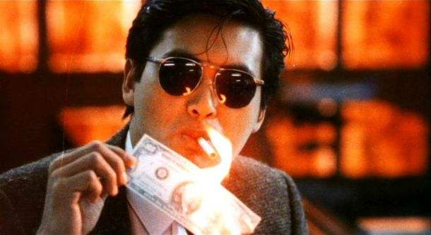
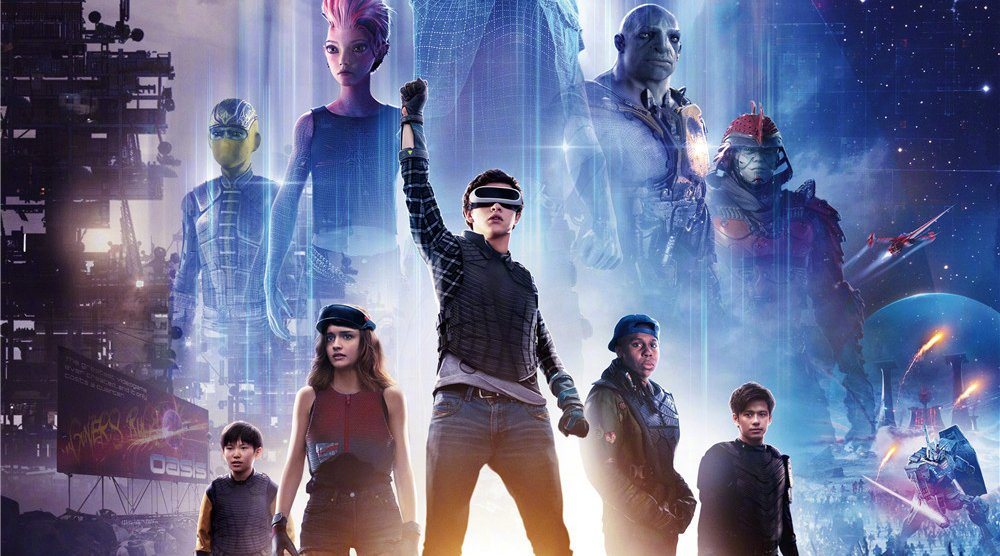

《教父》，“经典”不是他的标签，是他定义了“经典”这个词。 但是我不会说，《教父》是你必看的电影。 因为这世上没有什么电影是非看不可的，即便是《教父》也一样。有人说《教父》是男人必看的＂圣经＂，把《教父》当成男人的必需品或成为男人的捷径，那其实不是赞美这套电影，而是在贬低它，因为把他降到了和伟哥一样的地位。 而真正的男人是不需要伟哥的。
但是，当你不得不闭上嘴巴，因为没人想听，不得不擦干血泪，因为没人在乎，这个时侯，去看看《教父》吧，因为它值得。
我欣赏马龙白兰度演的一代教父的从容不迫还有那个富有魔性的沙哑说话方式，我更欣赏阿尔·帕西若这位二代教父，从一个不关心家族事业，一心只想过自己生活的小毛孩到不得不为家族扛起大旗成长为一代经典的教父的蜕变。
还有，在《教父2》中，当我看到年轻的唐如何从一个孤身到美国的孤儿发展成一代伟大的西西里黑手党教父，我看到是一个男人，一个男人要经历那些苦，蜕变成一个真正的男人。而不是只会抱怨生活的愤青，只会逃避的懦夫，只会空口谈话的废物。
70年代的电影，虽然是老片，但也是一代黑帮片的经典。你要做的是，闭嘴，安静，欣赏，足够了。
根据真实经历改编而成，讲述了“超级大骗”弗兰克·阿巴内尔的传奇人生。这个人，曾在上世纪六十年代先后冒充过飞机驾驶员、儿科医生等，用各种手段诈取几百万美金。二十一岁前便成为许多国家通缉的要犯， 自1974年出狱以后，他协助FBI抓获了一大批金融骗术高手，并为银行等设计防伪支票。
而且很多人说这部电影远远不能表现出阿巴内尔现实中的传奇。因为他的真实经历比电影里还要神奇与不可思议。
本片由莱昂纳多·迪卡普里奥和汤姆·汉克斯领衔主演，小李子已经不用我多介绍了，陪跑了22年奥斯卡，终于拿奖了。我非常喜欢的一位男演员，特别喜欢他的那种优雅的气质和那充满磁性的声音。
回归正题，这部电影首先是让你了解了这个传奇人物的事迹，你看完都不得不佩服一个还未满18岁的孩子运用自己的过人的才智和超高的情商瞒过警察和FBI，做了那么多不可思议的事。
有几个片段比较深刻：一个是男主角的父亲教会了儿子如何与人谈判的一个小技巧。二是很多镜头都体现出男主角渴望父亲振作起来，去与母亲复合，让家庭重新和睦相处起来。可见父母的离异对男主的影响有多大。三是当汉克斯扮演的FBI卡尔在追逐弗兰克那么多年后，对弗兰克产生的那种类似父子间那种微妙的关系，两个孤独的男人，每逢圣诞节都会通电话聊天，那种寂寞的人生中有一个可以和你聊天的人就像是一种奢侈品一样。最后，当弗兰克要再度逃离时，卡尔没有追，只对他说了一句：“你会回来的，因为你看看后面，没有人追你。”这样猫捉老鼠的游戏已经不再，对弗兰克来说逃亡已经是没有必要的了，他有了重新做人的机会，何必再抛弃这样的机会？
该影片获得第75届奥斯卡最佳男配角及金球奖最佳男主角等20多项大奖。
我只能说这是一部非常温情感人的丧尸片，而且处处戳中人性的弱点。影片无论从特效以及细节都做的非常好，再加上男主角孔侑的精湛演技，我觉得这部电影真的很值得一看。先说人物的情感处理方面，从女儿天真的世界和父亲做金融的处处为己的想法形成对比，影片好几次体现父亲对女儿的爱而女儿却不解，是啊，孩子的世界是人人平等，都需要帮助的，而父亲的眼里，当然是自己的孩子最重要的。这是一个矛盾点。第二个是那对情侣最后那个不离不弃以及那位帅哥不忍对自己同学下手，都体现出了人性的情义。然后是那个壮大叔和孕妇那对夫妇。大叔虽然粗狂，确是性情中人，勇敢果断，我想很多女孩子会喜欢在这种在危难之中能保护自己的人。最后那个大叔要变成丧尸之前，他冲着老婆说出了自己孩子将来的名字，说真的我哭了。然后再来说说那个自私自利的大叔吧，从开头跟小女孩说乞丐不值得尊重，到后面各种损人不利己的事，为难当中只顾自己，他展现出大多数人类的内心的恐惧与自私。最后再说两个镜头，一个是男主孔侑被感染后，选择跳车自杀，那一瞬间回忆女儿的笑容，真的是令人心碎，可怜天下父母心。还有最后小女孩过隧道时哭着唱歌，小小年纪演技就很棒了。听说这部电影的结尾有另一个版本，最后那个孕妇和小女孩被当作丧尸枪杀，而那个自私大叔却获救了，听说因为这样的结局过于悲惨，所以电影发行时没有过审批，所以才重改了结尾。是啊，人人渴望美好，何乐而不为呢？
一部非常好的商业电影，把特工阐释为现代绅士并把暴力美学展现的很优雅很有趣，你很难看到一个把打斗与及枪战用镜头表现得这么优雅而不让人觉得害怕，毕竟影片中充满着血腥爆头等不适合孩子的场面，可是带上带感的BGM和华丽的特写镜头，还有各种炫酷的武器，你并不会觉得恶心，甚至还觉得有点好笑。作为一部商业电影，我觉得是非常成功的。剧情也没有什么特别的起伏与伏笔，总之就是整部看下来酣畅淋漓很痛快。最棒的几个镜头，恐怕就是特工哈利教训那些小混混，还有小男主最后和公主那段充满着让18岁少年欲望爆棚的那段片段了。
关于英雄本色这部电影，其实整部电影我看下来可以说是波澜不惊，可能不是生活在那个年代的人，可能也是因为过了年少冲动的青春期，整部电影无论从故事情节和还是表现手法，都感觉显得简单无技巧的感觉。不过这部电影到是留下了很多经典镜头，比如周润发饰演的小马哥用美钞点烟，比如小马哥那段争一口气，还有就是为了表现警察与贼的兄弟情间的矛盾，那些配乐与镜头捕捉，其实总的来说，这部电影给我感触没那么大，毕竟我接触的忠义兄弟情的电影也看了很多，但是如果把电影的顺序按那个年代来排的话，这部电影应该是香港黑帮片开山开创作之一，所以我这种年青一代的影迷也只是抱着对发哥年轻时的意气风发与及对张国荣小哥哥的俊美男去看的。他们真的是太帅了。
总体来说是一部很有趣的电影，首先是斯皮尔伯格的脑洞很大，他把自己以前的电影融到这部里，闪灵这部鬼片，很有意思。其次，我没去看一些关于这部电影的资料，我不知道斯皮尔伯格是不是就是暗隐自己就是创造绿洲的人，但是最后那个人，说他不再是真的分身时，也就是说，那个创造者是电脑本身吧。我不清楚。还有这部电影的主人公在追随绿洲的创造者，最后他没有选择和创造者一样的做错事，没有勇气和自己的爱人跳舞，没有亲吻自己的爱人，不忘初心。虚拟的永远是虚拟的，只有真实的世界才是能感觉到的。甚至是一顿唯美的午餐。这部电影其实也是在告诉我们一个道理，就是我们都沉浸在虚拟世界逃避现实，然而到最后我们都要去面对现实，社交网络是未来的主流，但是线下的真实世界才是回归人生最初始的美好。影片的特效很棒，而且引用了很多经典的画面和人物，比如哥斯拉，霸王龙，金刚。还有游戏和动画里面的人物，比如高达，屁股先锋的任务，这些都很酷，适合小孩和成人看。而且虚拟世界的美好，现实生活不一定是美好的，所以，珍惜现在，珍惜那份你触摸得到的现实。
